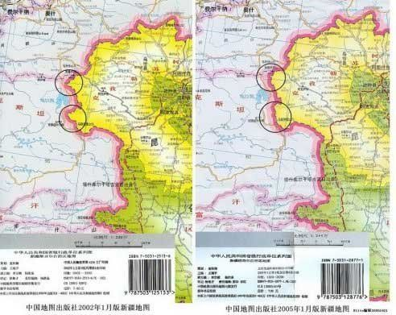
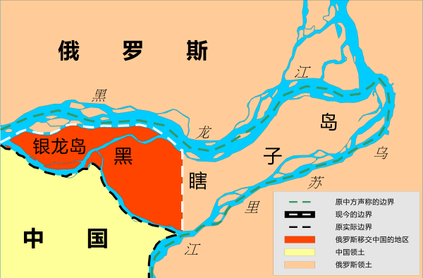
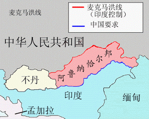
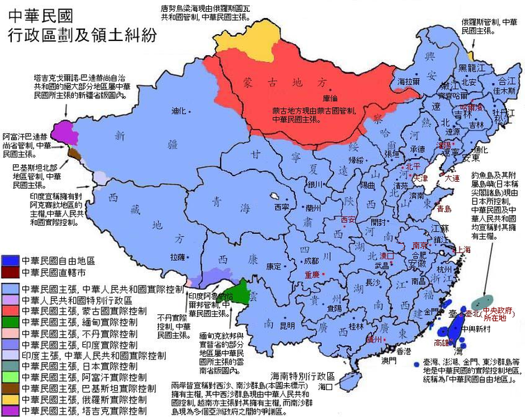

日本刚刚地震，网上就有传言，说某些网民对日本地震幸灾乐祸。一开始，俺不太在意，以为这类脑残只是一小撮人（本不想用“脑残”这种骂人的字眼，实在想不出更恰当的词汇）。令人遗憾的是：通过这几天的观察，感觉脑残的比例，远不止一小撮。看来，俺还是高估了很多屁民的道德水平以及情商、智商。
其实，这些脑残们都被党国给忽悠啦！
客观地说，大部分日本人，还是不坏滴。在日本人当中，确实有一小撮（比如：过去的侵华分子、现在的极右势力）蛮可恨的。但是这一小撮坏蛋，和党比起来，那就是小巫见大巫了。党以及党控制的朝廷，才是最可恨的（没有“之一”）。
这些年来，党一直通过真理部掌控的宣传机器，强化对日仇恨。这么干的主要目的，就是要【转移矛盾】。通过树立一个靶子，让大部分的仇恨和矛盾，都指向这个靶子。所有的专制政府、独裁政权，都善于玩这个把戏。（看过《1984》的同学，应该会记得里面的“果尔德施坦因”）
为了不让党国的这个伎俩得逞，俺今天要给大伙儿作一些详细的【对比】（俗话说：不比不知道，一比吓一跳）。通过这些对比，你会发现：党控制的朝廷，比那一小撮日本人可恨多了。
党国经常在中小学课文以及影视作品中，强调日本侵华时的三光政策。日本人杀害中国人，也是愤青仇日的主要理由之一。但是仇日的粪青们，你们是否清楚，党杀了多少中国人？其实党杀掉的中国人，远远超过日本军人杀掉的中国人。
为了不给五毛党留下话柄，俺下面列举的死亡人数，大都来自天朝官方。
八年抗战，死亡人数到底到底有多少，无论是民国政府还是当今党国，都没给出确切的说法。不过咱们可以推算出一个大致范围。
党国官方的说法是：
民国政府在战后的1946年，成立了"抗战赔偿委员会"，作出《中国责令日本赔偿损失之说贴》。里面提到：
二战时，其他国家的死亡人数占伤亡总数的比例，通常在30% - 40%之间。通过简单的乘法，粗糙地推算如下：
拿当今党国官方的数据推算，大概是1050万 - 1400之间；
拿之前民国官方的数据推算，大概是350万 - 470万之间。
（学过小学数学的同学，请帮俺验算一下）
大伙儿请注意，民国的统计，是为了要求战争赔偿。所以，统计数字只会故意夸大，不会故意缩小。至于共.党的统计为啥比民国的还高这么多，大伙儿自己去琢磨吧（搜狐的这篇文章，可以作为参考）。
看完抗日战争的数据，再来看看59年至61年的大饥荒，死亡多少人。（没听说过这事儿的同学，赶紧去看“维基百科”的介绍）
党国在治理屁民方面，是很有一套滴——比如设立了完善的户口制度。所以，有别于抗战时期的数据混乱，三年大饥荒的死亡数据，相对还是比较清晰滴。
由于大饥荒死的人太多，相关的统计数据一直是朝廷的机密。直到1983年，相关数据才披露。在中国统计局出版的《中国统计年鉴》（1983年），可以找到如下的户口登记数据。
为了说明这些数字不是俺伪造的，再给出官方的“中国人口信息网”的图片（官网的链接在“这里”）。

如果你单看“自然增长率”这一列，就会明显感觉到有一个低谷。但是光靠感觉，是远远不够滴。我们继续来做一下简单的四则运算：
57年到59年，人口增长了2554万。
59年到61年，人口减少了1348万。
61年到63年，人口增长了3313万。
有木有看到？！同样的时间跨度，大饥荒之前及之后，人口都增加了2千万到3千万。而大饥荒时期，人口反而少了一千三百多万。要死多少人，才会让天朝的人口出现明显的负增长？而且，保不准统计局在编写这份《统计年鉴》时，已经对数据作了一些调整（这个你懂的）。
有些天真的同学会说，那几年是出现自然灾害，所以才这样。那俺就要问了，中国一向自诩地大物博、幅员辽阔，到底要出现多大范围的水灾、旱灾、蝗灾、XX灾，才能让全国的粮食都歉收？而且，如果你去查阅党国官方的气象资料、水文资料、XX资料，你会惊讶地发现，那3年，中国没有出现大规模的旱灾、水灾、蝗灾、XX灾。那3年的灾害，根本不是自然灾害，是人为灾害。
更加没人性的是，朝廷当时不是没有粮食。那3年的粮食出口，其实有不少（据说到百万吨），光免费支援阿尔巴尼亚的粮食，就有几万吨（请看“这里”）。随着外交部解密档案的逐步开放（请看"外交部官网"），相关的这些对外援助数据，还会继续曝光。
估计有些同学更纳闷了，为啥没有自然灾害，而且能拿粮食去出口，却饿死这么多人？想知道其中的奥妙？请看俺专门写的系列《谈谈三年大饥荒》。
在抗战时期，中日是交战国，共打了八年，最多杀死1千多万。对日军来说，它们杀的，是外族人。
在大饥荒中，处于和平年代，1960年一年，总人口就少掉1千万。对党来说，它们搞死的，是本族人。
而且俺只是举了大饥荒这个例子。如果把历次的政治清洗（比如文革、清洗AB团、肃托）也算上，那党搞死的人就更多了。
除了翻二战的旧账，很多仇日愤青经常挂在嘴边的，是钓鱼岛纠纷。每当钓鱼岛出问题，党国总会跳出来，强调一下钓鱼岛的主权，以示自己很爱国，很维护主权。
但是仇日愤青们可能不知道，党国悄无声息地干了不少卖国的勾当，在很多边界纠纷中，轻易就做出让步。和某些领土让步相比，钓鱼岛算是小意思了。请看如下几个例子：
先从最近发生的事情说起。话说前不久（2011年1月中旬），官方刊登了一条新闻——《塔吉克斯坦宣布将退还中国约1000平方公里领土》（请看“这里”）。光看这个标题，貌似朝廷很牛逼，搞回来一千平方公里的土地。其实捏，两国边界的争议面积是2万8千平方公里，咱们就要回来一个零头！
有天朝出版的地图为证。

“江核心”领导下的朝廷，早在1999年就正式签署《中塔国界协定》，在2002年又签订《中塔国界的补充协定》。通过这俩条约，咱官方已经书面承认那块地盘（28000-1000=27000）归塔吉克。今后再想要回来，就难喽。
黑龙江北岸，有一块地，叫“江东六十四屯”，面积约3600平方公里。虽说这块地在黑龙江的俄国一侧，但由于清朝有很多中国人定居在此。所以清朝跟沙皇签订的"瑷珲条约"中，把此地归属清朝。后来沙皇利用八国联军侵华的时候，乘机派兵占了此地。
虽说被占了，但是从清朝到北洋政府、到老蒋的政府、到现在的台湾政府，都不承认俄国的占领，认为此地还是归属中国。结果到1991年，咱们的江书记同苏联的戈书记一起签了《中苏国界东段协定》，直接就给卖了。

再来说说“黑瞎子岛”，面积约327平方公里。从清朝到民国，该岛一直隶属中国。在1929年的中东路事件，苏联入侵东北，借机强占该岛。值得一提的是：当时的中国共产党不但没有保家卫国，反而打出【武装保卫苏联】的奇葩口号，配合苏联入侵东北——在民国时期，这就是不折不扣的“带路党”。
之后苏联长期占领该岛，但民国政府一直不予承认。到了2004年，朝廷再次跟俄罗斯签订卖国的《中华人民共和国和俄罗斯联邦关于中俄国界东段的补充协定》，正式承认黑瞎子岛的东部归俄罗斯，中国只收回该岛的西部（图中红色部分）。
刚才说的2个，都是江蛤蟆卖国。再来看看毛腊肉如何卖国。首先请看地图。

地图中标注的争议地区，中国称为“藏南地区”，印度叫“阿鲁纳恰尔邦”。这块争议地区可不小——将近7万平方公里。北边就是那条臭名昭著的“麦克马洪线”，中国政府至今不承认。1962年中印战争时，中国军队已经打到了南边那条“传统控制线”。结果老毛也不知咋滴，单方面宣布停火，命令部队主动后撤，再次放弃了这块争议地区。
中印战争后，印度继续控制此地。1987年，印度在该地区正式设立“阿鲁纳恰尔邦”，然后开始不断往这个地区移民（目前人口约100万）。而我们的朝廷，至今也没有采取什么有效措施来应对。
（请允许俺稍微跑题一下）
一贯强硬的老毛，为啥会犯怂捏？咱们不妨来揣测一下。1950年朝鲜战争开打时，中国已经跟美国翻脸；五十年代末期又跟苏联闹翻（当时大部分社会主义国家，包括北朝鲜，都站在苏联一边）。所以在62年中印开战时，处于冷战中的美苏两个超级大国，竟然联合起来，一起对中国施加压力。于是老毛只能当缩头乌龟了。
解放前，老蒋跟美国的关系忒好了，跟苏的关系也不差。那时候，美、苏、英、中是二战的四大战胜国（德、日、意是战败国，法是沦陷国）。那时候，印度算老几啊？结果老毛掌权才13年，中国的国际地位，就成这样了。
长白山（也叫白头山）顶峰原来是中国领土。北朝鲜号称他们的伟大领袖金正日出生于此，把长白山称为“圣山”（其实金胖子出生于苏联远东的兵营）。结果捏，老毛为了照顾社会主义大家庭的面子，在1962年跟北朝鲜签定条约，划了一块地给北朝鲜，长白山顶峰由中国和北朝鲜对半分。貌似朝鲜人还不领情，还经常跳出来，要求把整个长白山顶峰都划给他们。
大伙儿都知道，北朝鲜一直靠中国的各种援助才能支撑到现在，它居然还不要脸，找中国要领土；而中国为了面子，居然还给了。一个不要脸的，碰上一个死要面子的，真是绝配。
中国和缅甸也有边界纠纷，俗称“江心坡问题”（中缅未定界北段）。此地面积约2万7千平方公里，面积大且土地肥沃。（参见本文末尾的民国行政区地图，绿色部分就是）
从清朝政府到民国政府，一直宣称对此地拥有主权。但是在1960年，周恩来代表中国，签订了《中缅边界条约》。该条约承认“江心坡”为缅甸的领土。据说条约签署后，国内的一些政府高层颇有微词，认为让步太大。当时周总理的解释，大意是：为求缓和，避免引起紧张局面。
缅甸其实和朝鲜类似。缅甸的军人独裁政府（俺之前的帖子提到过），长期接受中国的军事援助。这样的国家，能引起啥“紧张局面”？
限于篇幅，其它领土纠纷就不一一列举了。有兴趣的同学，可以看看下面这张台湾民国政府画的行政地图。上面标注了各个边境争议地点。另外，还可以看看维基百科的汇总。
清朝政府因为实力不够，技不如人，经常被打得满地找牙，不得已而割地——说起来还情有可原。
但是当今天朝，有好几次割地，都是我们处于优势地位，对方都是比我们弱小的国家（如：北朝鲜、缅甸、塔吉克）。在这种有利地位下，居然还割地给别人！！！这不仅让俺想起慈禧老佛爷的一句名言：【宁赠友邦，不予家奴】。

今天恰逢周末，写得比较多。俺无非是想奉劝那些痛恨日本的草根民众，党比日本可恨多了。虽说“恨党”跟“恨日本”并不矛盾，然而凡事要分清主次。大伙儿要搞清楚【主要的】仇恨对象，不要被党国当猴耍。
俺博客上，和本文相关的帖子（需翻墙）：
关于抗日战争——谈谈真理部对抗战历史的篡改
谈谈真理部对朝鲜战争的忽悠
谈谈三年大饥荒（系列）
看看真理部是如何 PS 照片的
其实，这些脑残们都被党国给忽悠啦！
★党国比某些日本人可恨多了
客观地说，大部分日本人，还是不坏滴。在日本人当中，确实有一小撮（比如：过去的侵华分子、现在的极右势力）蛮可恨的。但是这一小撮坏蛋，和党比起来，那就是小巫见大巫了。党以及党控制的朝廷，才是最可恨的（没有“之一”）。
这些年来，党一直通过真理部掌控的宣传机器，强化对日仇恨。这么干的主要目的，就是要【转移矛盾】。通过树立一个靶子，让大部分的仇恨和矛盾，都指向这个靶子。所有的专制政府、独裁政权，都善于玩这个把戏。（看过《1984》的同学，应该会记得里面的“果尔德施坦因”）
为了不让党国的这个伎俩得逞，俺今天要给大伙儿作一些详细的【对比】（俗话说：不比不知道，一比吓一跳）。通过这些对比，你会发现：党控制的朝廷，比那一小撮日本人可恨多了。
★对比杀人的数量
党国经常在中小学课文以及影视作品中，强调日本侵华时的三光政策。日本人杀害中国人，也是愤青仇日的主要理由之一。但是仇日的粪青们，你们是否清楚，党杀了多少中国人？其实党杀掉的中国人，远远超过日本军人杀掉的中国人。
为了不给五毛党留下话柄，俺下面列举的死亡人数，大都来自天朝官方。
◇八年抗战的死亡人数
八年抗战，死亡人数到底到底有多少，无论是民国政府还是当今党国，都没给出确切的说法。不过咱们可以推算出一个大致范围。
党国官方的说法是：
２０世纪３０年代开始，日本军国主义发动全面侵华战争，致使中国军民３５００万人伤亡，。这是老江98年访问日本时，亲口说的（出处在新华网这里）。
民国政府在战后的1946年，成立了"抗战赔偿委员会"，作出《中国责令日本赔偿损失之说贴》。里面提到：
自１９３７年７月７日至战争结束，我军伤亡３３１万多人，人民伤亡８４２万多人（出处在新华网这里）。
二战时，其他国家的死亡人数占伤亡总数的比例，通常在30% - 40%之间。通过简单的乘法，粗糙地推算如下：
拿当今党国官方的数据推算，大概是1050万 - 1400之间；
拿之前民国官方的数据推算，大概是350万 - 470万之间。
（学过小学数学的同学，请帮俺验算一下）
大伙儿请注意，民国的统计，是为了要求战争赔偿。所以，统计数字只会故意夸大，不会故意缩小。至于共.党的统计为啥比民国的还高这么多，大伙儿自己去琢磨吧（搜狐的这篇文章，可以作为参考）。
◇三年大饥荒的死亡人数
看完抗日战争的数据，再来看看59年至61年的大饥荒，死亡多少人。（没听说过这事儿的同学，赶紧去看“维基百科”的介绍）
党国在治理屁民方面，是很有一套滴——比如设立了完善的户口制度。所以，有别于抗战时期的数据混乱，三年大饥荒的死亡数据，相对还是比较清晰滴。
由于大饥荒死的人太多，相关的统计数据一直是朝廷的机密。直到1983年，相关数据才披露。在中国统计局出版的《中国统计年鉴》（1983年），可以找到如下的户口登记数据。
| 年份 | 年末人口(万) | 出生率(‰) | 死亡率(‰) | 自然增长率(‰) |
|---|---|---|---|---|
| 1957 | 64,653 | 34.03 | 10.80 | 23.23 |
| 1958 | 65,994 | 29.22 | 11.98 | 17.24 |
| 1959 | 67,207 | 24.78 | 14.59 | 10.19 |
| 1960 | 66,207 | 20.86 | 25.43 | -4.57 |
| 1961 | 65,859 | 18.02 | 14.24 | 3.78 |
| 1962 | 67,295 | 37.01 | 10.02 | 26.99 |
| 1963 | 69,172 | 43.37 | 10.04 | 33.33 |
| 1964 | 70,499 | 39.14 | 11.50 | 27.64 |
| 1965 | 72,538 | 37.88 | 9.50 | 28.38 |
为了说明这些数字不是俺伪造的，再给出官方的“中国人口信息网”的图片（官网的链接在“这里”）。
如果你单看“自然增长率”这一列，就会明显感觉到有一个低谷。但是光靠感觉，是远远不够滴。我们继续来做一下简单的四则运算：
57年到59年，人口增长了2554万。
59年到61年，人口减少了1348万。
61年到63年，人口增长了3313万。
有木有看到？！同样的时间跨度，大饥荒之前及之后，人口都增加了2千万到3千万。而大饥荒时期，人口反而少了一千三百多万。要死多少人，才会让天朝的人口出现明显的负增长？而且，保不准统计局在编写这份《统计年鉴》时，已经对数据作了一些调整（这个你懂的）。
有些天真的同学会说，那几年是出现自然灾害，所以才这样。那俺就要问了，中国一向自诩地大物博、幅员辽阔，到底要出现多大范围的水灾、旱灾、蝗灾、XX灾，才能让全国的粮食都歉收？而且，如果你去查阅党国官方的气象资料、水文资料、XX资料，你会惊讶地发现，那3年，中国没有出现大规模的旱灾、水灾、蝗灾、XX灾。那3年的灾害，根本不是自然灾害，是人为灾害。
更加没人性的是，朝廷当时不是没有粮食。那3年的粮食出口，其实有不少（据说到百万吨），光免费支援阿尔巴尼亚的粮食，就有几万吨（请看“这里”）。随着外交部解密档案的逐步开放（请看"外交部官网"），相关的这些对外援助数据，还会继续曝光。
估计有些同学更纳闷了，为啥没有自然灾害，而且能拿粮食去出口，却饿死这么多人？想知道其中的奥妙？请看俺专门写的系列《谈谈三年大饥荒》。
◇关于“杀人”的点评
在抗战时期，中日是交战国，共打了八年，最多杀死1千多万。对日军来说，它们杀的，是外族人。
在大饥荒中，处于和平年代，1960年一年，总人口就少掉1千万。对党来说，它们搞死的，是本族人。
而且俺只是举了大饥荒这个例子。如果把历次的政治清洗（比如文革、清洗AB团、肃托）也算上，那党搞死的人就更多了。
★对比卖国的程度
除了翻二战的旧账，很多仇日愤青经常挂在嘴边的，是钓鱼岛纠纷。每当钓鱼岛出问题，党国总会跳出来，强调一下钓鱼岛的主权，以示自己很爱国，很维护主权。
但是仇日愤青们可能不知道，党国悄无声息地干了不少卖国的勾当，在很多边界纠纷中，轻易就做出让步。和某些领土让步相比，钓鱼岛算是小意思了。请看如下几个例子：
◇中塔(新疆)边界问题
先从最近发生的事情说起。话说前不久（2011年1月中旬），官方刊登了一条新闻——《塔吉克斯坦宣布将退还中国约1000平方公里领土》（请看“这里”）。光看这个标题，貌似朝廷很牛逼，搞回来一千平方公里的土地。其实捏，两国边界的争议面积是2万8千平方公里，咱们就要回来一个零头！
有天朝出版的地图为证。
“江核心”领导下的朝廷，早在1999年就正式签署《中塔国界协定》，在2002年又签订《中塔国界的补充协定》。通过这俩条约，咱官方已经书面承认那块地盘（28000-1000=27000）归塔吉克。今后再想要回来，就难喽。
◇中俄(黑龙江)边界问题
黑龙江北岸，有一块地，叫“江东六十四屯”，面积约3600平方公里。虽说这块地在黑龙江的俄国一侧，但由于清朝有很多中国人定居在此。所以清朝跟沙皇签订的"瑷珲条约"中，把此地归属清朝。后来沙皇利用八国联军侵华的时候，乘机派兵占了此地。
虽说被占了，但是从清朝到北洋政府、到老蒋的政府、到现在的台湾政府，都不承认俄国的占领，认为此地还是归属中国。结果到1991年，咱们的江书记同苏联的戈书记一起签了《中苏国界东段协定》，直接就给卖了。
再来说说“黑瞎子岛”，面积约327平方公里。从清朝到民国，该岛一直隶属中国。在1929年的中东路事件，苏联入侵东北，借机强占该岛。值得一提的是：当时的中国共产党不但没有保家卫国，反而打出【武装保卫苏联】的奇葩口号，配合苏联入侵东北——在民国时期，这就是不折不扣的“带路党”。
之后苏联长期占领该岛，但民国政府一直不予承认。到了2004年，朝廷再次跟俄罗斯签订卖国的《中华人民共和国和俄罗斯联邦关于中俄国界东段的补充协定》，正式承认黑瞎子岛的东部归俄罗斯，中国只收回该岛的西部（图中红色部分）。
◇中印(西藏)边界问题
刚才说的2个，都是江蛤蟆卖国。再来看看毛腊肉如何卖国。首先请看地图。
地图中标注的争议地区，中国称为“藏南地区”，印度叫“阿鲁纳恰尔邦”。这块争议地区可不小——将近7万平方公里。北边就是那条臭名昭著的“麦克马洪线”，中国政府至今不承认。1962年中印战争时，中国军队已经打到了南边那条“传统控制线”。结果老毛也不知咋滴，单方面宣布停火，命令部队主动后撤，再次放弃了这块争议地区。
中印战争后，印度继续控制此地。1987年，印度在该地区正式设立“阿鲁纳恰尔邦”，然后开始不断往这个地区移民（目前人口约100万）。而我们的朝廷，至今也没有采取什么有效措施来应对。
（请允许俺稍微跑题一下）
一贯强硬的老毛，为啥会犯怂捏？咱们不妨来揣测一下。1950年朝鲜战争开打时，中国已经跟美国翻脸；五十年代末期又跟苏联闹翻（当时大部分社会主义国家，包括北朝鲜，都站在苏联一边）。所以在62年中印开战时，处于冷战中的美苏两个超级大国，竟然联合起来，一起对中国施加压力。于是老毛只能当缩头乌龟了。
解放前，老蒋跟美国的关系忒好了，跟苏的关系也不差。那时候，美、苏、英、中是二战的四大战胜国（德、日、意是战败国，法是沦陷国）。那时候，印度算老几啊？结果老毛掌权才13年，中国的国际地位，就成这样了。
◇中朝(吉林)边界问题
长白山（也叫白头山）顶峰原来是中国领土。北朝鲜号称他们的伟大领袖金正日出生于此，把长白山称为“圣山”（其实金胖子出生于苏联远东的兵营）。结果捏，老毛为了照顾社会主义大家庭的面子，在1962年跟北朝鲜签定条约，划了一块地给北朝鲜，长白山顶峰由中国和北朝鲜对半分。貌似朝鲜人还不领情，还经常跳出来，要求把整个长白山顶峰都划给他们。
大伙儿都知道，北朝鲜一直靠中国的各种援助才能支撑到现在，它居然还不要脸，找中国要领土；而中国为了面子，居然还给了。一个不要脸的，碰上一个死要面子的，真是绝配。
◇中缅(云南)边界问题
中国和缅甸也有边界纠纷，俗称“江心坡问题”（中缅未定界北段）。此地面积约2万7千平方公里，面积大且土地肥沃。（参见本文末尾的民国行政区地图，绿色部分就是）
从清朝政府到民国政府，一直宣称对此地拥有主权。但是在1960年，周恩来代表中国，签订了《中缅边界条约》。该条约承认“江心坡”为缅甸的领土。据说条约签署后，国内的一些政府高层颇有微词，认为让步太大。当时周总理的解释，大意是：为求缓和，避免引起紧张局面。
缅甸其实和朝鲜类似。缅甸的军人独裁政府（俺之前的帖子提到过），长期接受中国的军事援助。这样的国家，能引起啥“紧张局面”？
◇关于"卖国"的点评
限于篇幅，其它领土纠纷就不一一列举了。有兴趣的同学，可以看看下面这张台湾民国政府画的行政地图。上面标注了各个边境争议地点。另外，还可以看看维基百科的汇总。
清朝政府因为实力不够，技不如人，经常被打得满地找牙，不得已而割地——说起来还情有可原。
但是当今天朝，有好几次割地，都是我们处于优势地位，对方都是比我们弱小的国家（如：北朝鲜、缅甸、塔吉克）。在这种有利地位下，居然还割地给别人！！！这不仅让俺想起慈禧老佛爷的一句名言：【宁赠友邦，不予家奴】。
★总结
今天恰逢周末，写得比较多。俺无非是想奉劝那些痛恨日本的草根民众，党比日本可恨多了。虽说“恨党”跟“恨日本”并不矛盾，然而凡事要分清主次。大伙儿要搞清楚【主要的】仇恨对象，不要被党国当猴耍。
俺博客上，和本文相关的帖子（需翻墙）：
关于抗日战争——谈谈真理部对抗战历史的篡改
谈谈真理部对朝鲜战争的忽悠
谈谈三年大饥荒（系列）
看看真理部是如何 PS 照片的
版权声明
本博客所有的原创文章，作者皆保留版权。转载必须包含本声明，保持本文完整，并以超链接形式注明作者编程随想和本文原始地址：
https://program-think.blogspot.com/2011/03/ccp-vs-japanese.html
本博客所有的原创文章，作者皆保留版权。转载必须包含本声明，保持本文完整，并以超链接形式注明作者编程随想和本文原始地址：
https://program-think.blogspot.com/2011/03/ccp-vs-japanese.html